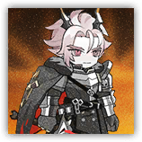

Theresis, Black Crowned Lord
Melee Physical; Sarkaz Leader

|
 |
Theresis, Black Crowned Lord. The conqueror of the land, yet he left no mark upon that ceremonial deed. The true responsibility bestowed upon him and his sister has yet to arrive — the weight of the crown reminds them of this at all times. The Babel Oath. Thus we behold — Therasia, and Theresis... they crown each other. The Sarkaz thus enter an era of dual monarchy. Some celebrate, celebrating the dawn of this new age; some fear, fearing this unprecedented anomaly in history. What lies ahead, we cannot yet know. |
"The dual monarchs bring reconciliation to the land, all beings sharing love and nourishment. This is the age of humanity — the wound of two centuries finally healed. This is the dream homeland the Sarkaz gladly share."
Theresis
Medium Humanoid (Sarkaz), Lawful Neutral
| AC 24 | Initiative +20 (30) |
| HP 480 (30d8+240) | |
| Speed 40 ft. | |
| Mod | Save | Mod | Save | Mod | Save | |||||||||
|---|---|---|---|---|---|---|---|---|---|---|---|---|---|---|
| STR | 26 | +8 | +8 | DEX | 18 | +4 | +4 | CON | 24 | +7 | +15 | |||
| INT | 20 | +5 | +13 | WIS | 18 | +4 | +12 | CHA | 22 | +6 | +6 |
| Skills Athletics +16, Acrobatics +12, Perception +12, Intimidation +13, History +13, Religion +13 |
| Resistances Poison, Radiant, Necrotic |
| Immunities Blinded, Deafened, Charmed, Frightened |
| Senses Truesight 60 ft., Blindsight 60 ft., Darkvision 120 ft., passive Perception 22 |
| Languages Common, Sarkaz, Victorian |
| CR 26 (90,000 XP, or Mythic 180,000; PB +10) |
Traits
Boss Resistance (3/Day). When Theresis fails a saving throw, he can expend 50 HP to instead succeed. Additionally, Theresis can take Legendary Action and expend a use of Boss Resistance to regain 50 HP.
Magic Resistance. Theresis has Advantage on saving throws made to resist spells or other magical effects.
The Twin Crowns. Theresis gains different effects based on his distance from Therasia:
- Within 10 ft.: Theresis has the d12 Sanctuary condition.
- Within 30 ft.: Theresis has the d8 Sanctuary condition.
- Within 60 ft.: Theresis has the d6 Sanctuary condition.
- Beyond 60 ft.: Theresis doesn't benefit from effects provided by Therasia.
Civilight Eterna·Black-crowned Lord (Mythic Trait; Recharges on Long Rest). While Theresis's HP is reduced to 0, he doesn't die. At the start of his next turn, his HP resets to 480, and if Therasia is within 1,200 ft., he magically teleports to an unoccupied space within 10 ft. of Therasia. He recharges his Iron Crown Proclamation , and regains all expended uses of Legendary Resistance. Additionally, Theresis can use the options in the "Mystic Actions" section for 1 hour.
Monarch Ambition. Theresis always rolls the maximum value for his Hit Dice. Theresis adds his Charisma modifier to his AC (included above). Additionally, attack rolls made by all Sarkaz creatures against Theresis have Disadvantage.
Reshaping of Will. 1 minute after Theresis rolls Initiative, if his HP is not reduced to 0, he immediately deals 105 (10d10+50) force damage that can't be reduced to each chosen creature within 1,200 ft. A creature reduced to 0 HP by this damage dies outright.
Actions
Multiattack. Theresis makes three attacks using either Conquering Blade or Imperial Crosswave.
Conquering Blade. Melee Attack Roll: +16 to hit, reach 10 ft. Hit: 30 (4d10+8) slashing damage, and the target is Frightened until the start of Theresis's next turn. The target can choose not to be Frightened, instead taking 22 psychic damage that can't be reduced. Miss: 22 (4d10) psychic damage.
Imperial Crosswave. Ranged Attack Roll: +16 to hit, range 120 ft. Hit: 30 (4d10+8) slashing damage, and the target or all enemies in a 120-ft. line behind it takes 22 (4d10) force damage. Miss: 22 (4d10) force damage.
Iron Crown Proclamation (Recharge 5-6). Theresis and all Monarch Echoes within 120 ft. each choose a 120-ft.-long, 5-ft.-wide Line originating from themselves, unleashing a sword wave. Dexterity Saving Throw: DC 24 (has Disadvantage if caught in multiple sword waves), each enemy in the area, and the target can't benefit from any Cover during this effect. Failure: 33 (6d10) slashing damage plus 33 (6d10) force damage, and the target is Restrained and Prone until the end of its next turn. Success: Half damage only.
Bonus Actions
Summon Monarch Echo. Theresis summons 1d4 Monarch Echoes (AC 10, HP 50, Medium objects; up to 8 can exist) in unoccupied spaces within 120 ft. to assist in combat. When Theresis makes an attack, he can change the point of origin to one of the Monarch Echoes. Monarch Echoes disappear when reduced to 0 HP or after 1 minute.
Pure-white Petals Guard. Theresis throws a pure-white petal toward Therasia. If the direct path between them is unobstructed, the petal allows Therasia to retry recharging Reshaping the World. If blocked by a creature or object, it instead deals 33 (6d10) radiant damage to the blocking target.
Reactions
Unwritten Title Deed. Trigger: Theresis is hit by an attack. Response: Theresis can choose to lose 20 HP, then change the triggering attack to a miss. If Therasia is within 30 ft. of Theresis, Theresis regains the spent Reaction at the end of this turn.
Legendary Actions
Legendary Actions: 3 (4 in lair). Theresis can take one of the following actions immediately after another creature's turn. He regains all Legendary Actions at the start of his turn.
Swift Slash. Theresis immediately makes one Conquering Blade attack.
Echo Command. One Monarch Echo within 120 ft. of Theresis makes one Imperial Crosswave attack.
Crown's Dread. Theresis chooses each creature within 120 ft. that is aware of his presence, releasing the crown's power to influence their minds. Wisdom Saving Throw: DC 24 (has Disadvantage if the target is a Sarkaz), each chosen creature. Failure: The target is Charmed or Frightened (chosen by Theresis), and retries the saving throw at the end of its turn, ending the effect on a success. The save automatically succeeds after 1 minute, and a creature that succeeds on the save is immune to this effect for 1 minute.
Mystic Actions
If Theresis's Civilight Eterna trait is activated, he can choose from the following options as Legendary Actions.
Twin Crowns Radiance. Theresis immediately performs Pure-white Petals Guard.
Sarkaz Fury. Up to three Monarch Echoes within 120 ft. of Theresis each make one Imperial Crosswave attack, and he must choose a different target for each attack.
Land Conqueror. Theresis immediately makes one Conquering Blade attack with Advantage. This attack scores a critical hit on a roll of 18-20 on the d20 of the attack roll. A creature reduced to 0 HP by this damage dies outright.